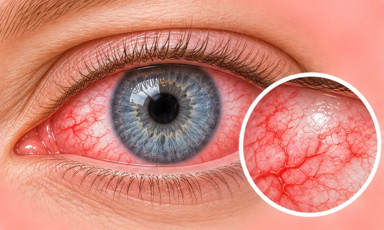
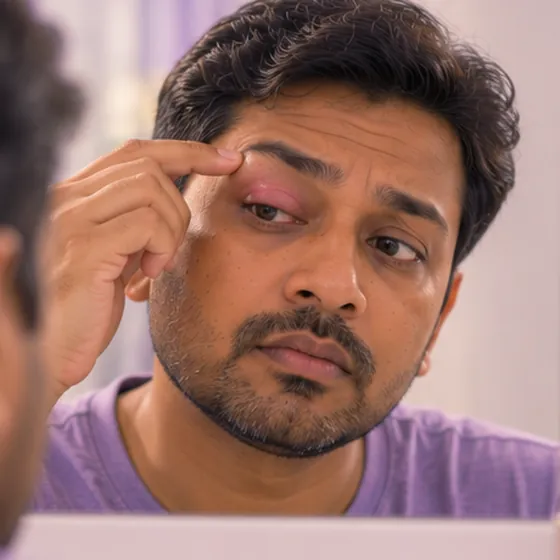

Blepharitis (inflamed eyelid edges)
Long-lasting redness and irritation along the edges of the eyelids
What it is
The edges of the eyelids, where the lashes grow, become red, itchy and crusty. It is common, can come and go, and often needs regular eyelid cleaning.
- Edges of the eyelids
- Adults and children
- Itchy, gritty, crusty
- Which doctor
- Eye doctor (ophthalmologist), family doctor
- Common in
- Adults and children; people with oily skin or dry eyes
- Contagious
- No
- Course
- Often long-lasting and may come back; regular care helps keep it calm
Common signs

Swollen eyelidEyelid swelling Red, itchy eyesAllergic conjunctivitis 
Watery eyeEpiphora
More signs
- Crusts or flakes on the lashes, worse on waking
- Lashes that fall out or grow crooked
Why it happens
- Blocked tiny oil glands in the eyelid edges
- Too many germs on the skin of the eyelids
- Skin problems such as dandruff or rosacea
- Allergy to eye make-up or lens products, or mites on the lashes
See a doctor first if
- Sudden loss of vision or a sudden change in vision: go to hospital now
- Severe eye pain, or a very red eye with sensitivity to light
- A painful red lump on the eyelid that keeps growing
- Swelling of the eyelid and the skin around the eye with fever
- No better after a few weeks of careful eyelid cleaning
If any apply, please see a doctor before a session.
This page is general information. Please keep taking your normal medicine and keep seeing your doctor.
Keep taking your normal medicine and keep seeing your doctor. Our session is a gentle support and does not replace medical care.
Looking after yourself

Ask your pharmacistPharmacist advice
More ways to look after yourself
- Wash your hands, then clean the eyelid edges gently every day with clean, lukewarm water
- A clean, warm cloth held on closed eyes for a few minutes may ease crusts
- Do not rub your eyes
- Avoid eye make-up until it settles, and replace old make-up
Tell your therapist
- A severe allergy
- Broken, red or sore skin
- Diabetes or less feeling in the skin
Your therapist will go through this with you before starting.
Questions and answers
What is Blepharitis (inflamed eyelid edges)?
Long-lasting redness and irritation along the edges of the eyelids. The edges of the eyelids, where the lashes grow, become red, itchy and crusty. It is common, can come and go, and often needs regular eyelid cleaning.
What are the common signs of Blepharitis (inflamed eyelid edges)?
Swollen eyelid · Red, itchy eyes · Watery eye
Why does Blepharitis (inflamed eyelid edges) happen?
Blocked tiny oil glands in the eyelid edges · Too many germs on the skin of the eyelids · Skin problems such as dandruff or rosacea · Allergy to eye make-up or lens products, or mites on the lashes
How can I look after myself with Blepharitis (inflamed eyelid edges)?
Ask your pharmacist
Can an AI Body Master session help with Blepharitis (inflamed eyelid edges)?
A session is gentle, needle-free meridian support for your wellbeing. It does not treat or cure Blepharitis (inflamed eyelid edges) and never replaces your medicine or your doctor. Tell your therapist about it before the session starts.
Related conditions
References: General information based on public health sources such as Mayo Clinic, NHS, Cleveland Clinic and NCBI StatPearls.
Page updated: 2026-11-01